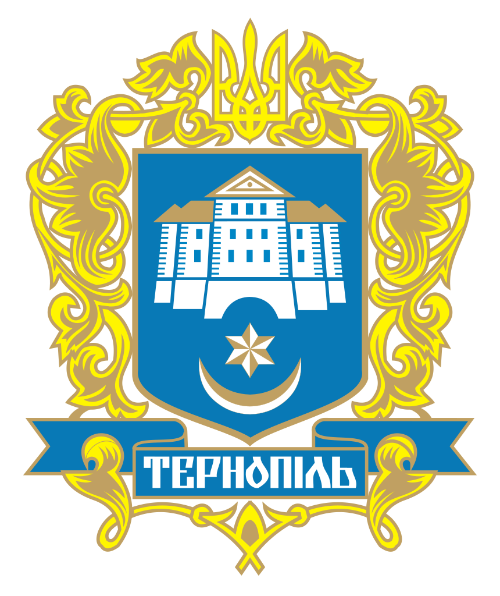

Тернопіль у минулому


Історія Тернополя
Місто Тернопіль — центр Тернопільської області на річці Серет, лівій притоці Дністра. На цій території виявлені сліди стоянок первісних людей ще з Х тис. до н.е. Якщо говорити власне про місто, його історію слід починати з давньоруського укріплення, яке називали Сопільче (Топільче), зруйнованого під час зимового 1240—1241 рр. походу Батия до Карпат. Через деякий час місто відроджується, а з 1349 р., як і вся Західна Україна, потрапляє під владу Речі Посполитої.
Період Речі Посполитої
Вперше місто згадується в літописах ХIV століття, коли польський король Сигізмунд I видав краківському кастеляну, великому коронному гетьману Яну Аморе Тарновському, грамоту на створення міста і на володіння околишніми землями. Місто було засновано в 1540 році.
Від імені гетьмана і з'явилася перша назва міста — ТАРНОПОЛЬ. На березі річки Серет був зведений замок, замокв центрі якого була розташована велика площа. На ній проводилися зібрання, ярмарки та оголошувалися накази. У XV—XVI століттях місто було захищене високими стінами, викладеними з великих кам'яних брил. Замок мав охороняти південно-західні кордони королівства від набігів татар і турків, які все ж у 1544—1698 рр. чотирнадцять раз спустошували місто, вбивали чи забирали в полон його мешканців.
У 1548 р. місто отримало Магдебурзьке право, за яким Тернополю давалися деякі привілеї: жителі на 15 років звільнялися від податків, а також наділялися правом влаштовувати три ярмарки на рік і щорічні торги, а також тримати товарні склади для закордонних купців.
При церковній парафії тернопільські міщани створили братство, якому власник міста князь В.К. Острозький у 1570 р. виділив землю, кошти на утримання школи і шпиталю для людей похилого віку та хворих. Братство протягом кількох століть розширювало свою діяльність і вплив на різні верстви українців, допомагало їм зберігати віру, обряди, звичаї, національну самобутність, будувалися церкви, школи та бібліотеки.
Через Тернопіль проходив визвольної шлях козаків Богдана Хмельницького в його боротьбі проти польської шляхти в 1648 р., 1651 р. і 1655 р. місцеві жителі не тільки приєднувалися до його загонів, але і самостійно виступали на захист своїх прав, відстоювали свою віру і культуру. Значна частина мешканців міста бігла на Запорізьку Січ і приєднується до козакам ще перед всеукраїнським повстанням. Тернопольці також допомагали козакам під час визвольного походу 1648 року Богдана Хмельницького на Львів.
Австрійський період
У 1772 р., після першого поділу Польщі, Тернопіль перейшов під владу Австрії. Нова влада сприяла економічному розвитку, пробудженню українського національного життя. У другій половині ХІХ ст. до Тернополю прокладают шість шосейних шляхів, в 1870 р. побудована залізниця Львів — Тернопіль. У місті почали працювати 2 банки, 5 приватних млинів і 3 крупорушки, розширилися шевські, сапожні, ковальські, столярні та інші цехи. Це вплинуло на приріст населення. Якщо в 1808 р. в Тернополі мешкало 7093 чоловіки, то наприкінці століття було понад 30 тисяч.
У 1820 р. відкрилася гімназія.
У 1844 р. місто стає вільним королівським містом. У період «весни народів» у 1848 р. в Тернополі була створена «Руська рада» як філія «Головної Руської Ради» у Львові. У 1870 р. в Тернопіль прийшла залізна дорога. У вересні 1875 р. створюється тернопільська «Просвіта». З 1898 р. почала діяти українська гімназія. Під впливом революційних подій 1848 р. інтелігенція Тернополя розпочала боротьбу за духовне і національне самовизначення. Відомий громадсько-політичний діяч Олександр Барвінський у 1876 р. відкриває філію «Просвіти», де почали видаватися книги з історії України, була бібліотека та книжкова крамниця для українського населення, організовувались концерти та етнографічні виставки. У 1898 р. була відкрита українська гімназія. На початку ХХ ст. в Тернополі почали створюватися культурно-просвітницкі і спортивні товариства «Січ», «Пласт», «Сокіл».
Перша світова війна
Історія міста Тернополь — Австрійський період З початком Першої світової війни в адміністративно-територіальному поділі Тернопільщини відбулися істотні зміни. У серпні 1914 р. Східну Галичину і частину Буковини окупували війська Росії. Створюється військове генерал-губернаторство Галичини, в яке входили Львівська, Перемишльська, Тернопільська та Чернівецька губернії. Адміністративна влада належала губернатору і повітовим начальникам управлінь. Вся адміністрація створювалася з військових і чиновників, які прибули з російських губерній.
Західно-Українська Народна Республіка
З листопада 1918 р. у Тернополі затвердилася українська влада. Міським комісаром став професор С. Сідоряк. Делегатами парламенту ЗУНР були обрані П. Карманскій і О. Кунько. З 23 листопада по 31 грудня 1918 р. місто тимчасово було столицею республіки: в Тернополі перебував уряд ЗУНР на чолі з К. Левицьким (з середини грудня виконував обов'язки голови уряду С. Голубович). 22 січня 1919 р. у Києві був прийнятий «Акт Злуки», проголосивший об'єднання двох українських держав в незалежну соборну Українську Народну Республіку (УНР). На початку липня 1919 р. внаслідок наступу польської армії, територія ЗУНР обмежувалася невеликою частиною південної Тернопільщини між Збручем, Дністром і лінією міст Заліщики-Гусятин. Відступаючи під натиском противника, УГА і керівництво ЗУНР 17-18 липня 1919 р. перейшли Збруч і вступили у Велику Україну. ЗУНР як держава перестала існувати, хоча її уряд до 23 липня 1923 р. продовжувала діяти в еміграції.
Тернопіль у складі Польщі
У липні 1919 р. місто перейшло під владу Польщі і перебувало у складі цієї держави до вересня 1939 р. У 1922 р. Тернопіль став центром новоствореного однойменного воєводства Польщі. Польська влада проводила жорстку колоніальну політику в усіх сферах життя краю, перш за все - в національному питанні. Українців обмежували в правах, жорстко переслідували за найменші прояви національної гідності. Але міщани Тернополя почали відновлювати роботу товариств «Луг», «Сокіл», «Просвіта», «Рідна школа», «Пласт», спортивного клубу «Поділля» і відстоювати свої соціальні та національні права. Пожвавила свою діяльність й організація Українських Націоналістів (ОУН). Особливо активно діяв молодіжний націоналістичний центр в Тернопільській украінской гімназії, Керований Романом Паладійчуком та майбутнім лідером ОУН Ярославом Стецько.
Радянський період (1)
17 вересня 1939 р. місто зайняли війська Червоної армії, і 4 грудня цього ж року Тернопіль став центром області в складі Української Радянської Соціалістичної Республіки. Були створені тимчасові воєводства, повітові та міські управління, у селах — сільські комітети, які проводили політику радянської влади. 27 жовтня 1939 р. Народне Збори Західної України прийняло рішення про включення Західної України до СРСР, до складу УРСР. З 1 листопада 1939 вводиться існуючий в УРСР адміністративно-територіальний устрій і створено 6 областей, серед них — Тернопільська з центром у Тернополі.
Друга світова війна
У липні 1941 р. після початку німецько-радянської війни Тернопільщину окупували німецько-нацистські загарбники. Територія колишнього Тернопільського воєводства була приєднана 1 серпня 1941 р. до Дистрикту «Галичина» Генеральної губернії Німеччини. Територія Кременецького повіту Волинського воєводства гітлерівці приєднали до генерального округу «Волинь і Поділля» рейхскоміссаріата «Україна», створеного 20 серпня 1941 р. На окупованих землях адміністративні функції виконували німецькі військові влади.
Радянський період (2)
Під час Другої Світової війни Тернопільський став був повністю знищений. А в 1950-их роках відбувається масштабна відбудова Тернополя. Водну перлину міста стали відновлювати у 1956 році, коли було прийнято рішення про підпорядкування всіх водних ресурсів місцевій владі. Тоді збудували нову дамбу, а рівень води став вищим, ніж було раніше. Нове водосховище зайняло значно більшу площу — понад 300 гектарів, і назвали його Комсомольським озером.
У той же час проходять так звані суботники з благоустрою територій довкола озера. Між водоймою та центром міста заклали парк імені Шевченка, який протягнувся вздовж східного берега водойми. Відреставрували і Старий Замок, у якому згодом розмістився Палац спорту. Впритул до нього прибудували красивий будиночок ресторану «Хвиля». Над рестораном була тераса, з якої відкривалась чудова панорама озера (на жаль, її вже не існує, оскільки цій будівлі надбудували другий поверх). На південно-східному березі був створений міський пляж. Потрапити до нього з міста можна було спустившись із широких сходів, що ліворуч Старого Замку, чи з вузьких, що біля альтанки праворуч нього. Уся набережна вздовж парку була оформлена в неокласичному стилі, який у ті часи був досить поширеним. Були споруджені альтанка та інші декоративні об'єкти. В цей же період був споруджений славнозвісний острів Кохання. Щоправда, це тепер його так називають. Тоді він був названий на честь тодішнього міського голови Сидоренка. Подейкують, що тоді за спорудження острівця міське керівництво отримало сувору догану. Однак зодчі у його проектуванні не вигадували чогось незвичайного. Просто під час планового поглиблення Комсомольського озера бульдозерами нагребли мул з дна водойми. Потім тут посадили дерева та збудували дерев'яну альтанку, що стоїть і досі.
У 1960-х роках пляж біля Старого замку ліквідували. Натомість створили стоянку для катерів, яхт і моторних човнів. Біля Старого замку збудували і центральну пристань. Широкі сходи, що ведуть до неї, розділив каскад штучних водоспадів, який назвали «Сльози Гронського». Пан Гронський у той час був головним архітектором міста, але через якийсь прокол його посадили у в'язницю. Поруч, на частині території колишнього Підзамче за типовим проектом збудували готель «Тернопіль». Однак у той час він значно прикрасив місто, а з боку набережної створили мальовничі схили. На протилежній стороні, на схилах Кутковецької гори, заклали лісопарк «Лісопарк». На березі новоствореної зеленої зони збудували ресторан «Поплавок», з тераси якого відкривався чудовий краєвид на центральну частину міста. Біля ресторану створили новий пляж. Згодом його назвали Ближнім, оскільки неподалік села Пронятин створили ще один пляж, який став Дальнім. У сімдесятих роках двадцятого століття стоянку човнів перенесли на протилежний берег міста. Там само був створений Морський клуб.
Період Незалежної України
В даний час Тернопіль - центр Тернопільської області в складі України, економічний і духовний центр західного регіону України. Тернопіль перетинають залізничні та шосейні шляхи, що зв'язують його із Західною Європою. За останні десятиріччя розвивається інфраструктура, набуває нових рис нинішній вигляд міста, перебудовується виробнича сфера. Підприємства Тернополя виробляють світлотехнічне і радіотехнічне обладнання, свеклокомбайни, будівельні матеріали, меблі, порцеляновий посуд, штучну шкіру, тканини, кондитерські вироби, товари легкої промисловості.
Сучасний Тернопіль — студентське місто. Тут готують кваліфікованих фахівців університети, академії, ряд інститутів, училищ, середні та середньо- спеціальні навчальні заклади. З'явилися ліцеї та коледжі.
В Тернополі працюють два театра, филармонія, краєзнавчий и художній музеї, картинна галерея, палаци культури, парки,Областной театр бібліотеки, є і Співоче поле. Кращі творчі сили об'єднують обласні організації Національних спілок письменників, художників, журналістів та архітекторів України.
У сучасному Тернополі, станом на 01.06.2005 р. налічується 235 тисяч жителів, більшість з них — українці. Тут живуть також росіяни, поляки, німці, представники майже 100 національностей.
Окрасою Тернополя є театральна площа та бульвар Шевченка. Тут 29 квітня в 1990 р. вперше в нашій державі було піднято і освячено український національний прапор. На площі проходять багатолюдні збори, мітинги, які проводять демократичні партії та громадські організації. Сюди люди приносять квіти до пам'ятника Т. Г. Шевченку, встановленому у сквері біля площі.
На вулиці гетьмана П. Сагайдачного 28 травня 1995 року освячено пам'ятник Івану Франку, який природно поєднується з архітектурним ансамблем міста.
Пам'ятними подіями в житті міста були виступи корифеїв українського театру М. Кропивницького, М. Заньковецької, М. Садовського, композитора М. Лисенка, всесвітньо відомої Соломії Крушельницької. У роки першої світової війни режисер Лесь Курбас організовував славнозвісні «Тернопільські театральні вечори». В різні часи у нашому місті перебували П. Кулешов, І. Франко, В. Стефаник, Лесь Мартович, В. Гнатюк, О. Довженко, І. Багряний, П. Тичина, М. Рильський, М. Бажан, А. Малишко, О. Гончар.
У Тернополі працюють драматичний театр ім. Т.Г. Шевченка, театр ляльок, філармонія, обласний краєзнавчий і художній музей, палаци культури, кінотеатри, бібліотеки, є Співоче поле. Кращі творчі сили об'єднують обласні організації Спілок письменників, художників, журналістів, архітекторів України.